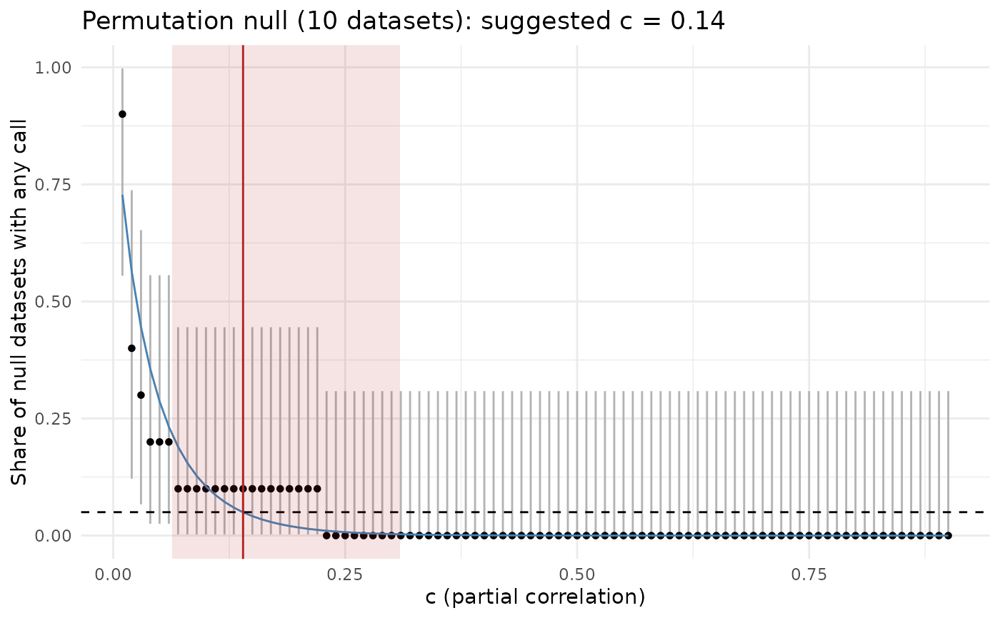

Choose the minimum-difference threshold c from a permutation null
Source:R/calibrate_c.R
calibrate_c.RdEstimates the smallest threshold \(c\) for the magnitude rule of
select_diff_edges() (\(P(|D| > c)\) with Bayesian FDR control) at
which these data, analysed with these MCMC settings, make no false calls
when the two groups do not differ. The group labels are shuffled
n_perm times; each shuffled dataset is refitted with the settings of
the real analysis, and every call it makes is false.
Usage
calibrate_c(
data_list,
fit = NULL,
method = c("ssvs", "mghs", "gwishart"),
mcmc_args = list(),
groups = c(1, 2),
alpha = 0.05,
target = c("any_call", "mean_false_calls"),
target_value = NULL,
c_grid = NULL,
n_perm = 50,
min_perm = 20,
c_tol = 0.02,
seed = 1,
parallel = FALSE,
ncores = max(1L, parallel::detectCores() - 1L),
verbose = TRUE
)
# S3 method for class 'multiggm_c_calibration'
plot(x, type = c("any", "mean"), ...)Arguments
- data_list
The list of data matrices of the real analysis.
- fit
The fit of the real analysis (recommended). Its method, prior (
hyper),burnin,nsave,thinand number of chains are reused, so the null is fitted exactly as the real data. Fits made before multiGGM 0.9.0 do not recordburninreliably; give it inmcmc_argsif asked.- method
Sampler when
fitis not given:"ssvs","mghs"or"gwishart".- mcmc_args
Named list of
multiggm_mcmc()arguments. Withoutfit, it must give at leastburninandnsave; withfit, its entries override the fit's settings.save_draws,diff_deltas,mcse_batches,waic,seedandparallelare set bycalibrate_c().- groups
The two groups to calibrate. Only these two groups' samples are shuffled; any other groups are left as they are.
- alpha
Target FDR of the selection rule, as in
select_diff_edges(). Also the default target for"any_call".- target
"any_call"(default): the share of null datasets with at least one call is at mosttarget_value(defaultalpha). Under a null of no differences every call is false, so this is the FDR of the rule."mean_false_calls": the expected number of false calls per dataset is at mosttarget_value(default 1), a weaker per-family error rate.- target_value
See
target.- c_grid
Thresholds on the partial-correlation scale. Default
0.01tomax(0.40, 5 * sqrt(1/n_1 + 1/n_2))by 0.01, where \(\sqrt{1/n_1 + 1/n_2}\) is about the sampling SD of a difference in partial correlations.- n_perm
Maximum number of permutations (default 50).
- min_perm
Permutations before the first stopping check (default 20).
- c_tol
Stop early once the 95% confidence interval for the estimated \(c\) is within \(\pm\)
c_tol(default 0.02). Only fortarget = "any_call";c_tol = 0always runs alln_perm.- seed
Seed for the permutations and the fits' seeds.
- parallel, ncores
Fit permutations in parallel (forked processes on Unix-alikes; sequential on Windows). Each permutation's chains run sequentially inside its worker.
- verbose
Print progress.
- x
A
"multiggm_c_calibration"object.- type
"any"(default): share of null datasets with any call against \(c\), with Clopper-Pearson intervals, the fitted curve, the target and the chosen \(c\)."mean": mean number of false calls per dataset, with its SE.- ...
Unused.
Value
An object of class "multiggm_c_calibration": a list with
summaryData frame, one row per grid value:
c,mean_calls,se_calls,share_any,share_any_lower,share_any_upper(Clopper-Pearson 95%),p_any_fitted(the fitted Weibull \(P(T \ge c)\)) andmeets_target. Also returned byas.data.frame().callsMatrix of call counts, permutations x grid.
suggested_cThe chosen grid value (
NAif no grid value meets the target).c_null,c_null_lower,c_null_upperFor
"any_call": the continuous estimate and its 95% interval.last_callThe \(T_i\) of the successful permutations.
noise_ref0.99 quantile of the posterior mean \(|D|\) over edges and permutations, a quick noise scale.
permsData frame, one row per permutation run:
perm,seed,ok,error,warning,seconds. Withseed,groupsand the original data, any permutation can be rebuilt (see Examples).n_perm_run,n_ok,stoppedHow many permutations were run and succeeded, and why it stopped.
target,target_value,alpha,groups,settings,seedSettings.
Details
What the null is. Each original group is first centred on its
own means, exactly as multiggm_mcmc() centres the data it fits, so
differences in mean expression between groups do not leak into the
shuffled groups' covariances. The pooled samples of the two groups are
then reassigned at random with the original group sizes. Nothing is
rescaled. The null is therefore "the two groups share one covariance
structure", and \(c_{null}\) is the smallest difference in partial
correlation these data can tell from noise.
Same settings as the analysis. The posterior spread of \(D\),
and the resolution \(1 / n_{save}\) of its probabilities, depend on the
prior and the chain length, so a null fitted with other settings gives a
\(c\) that does not transfer. Use the fit's settings, and for mGHS the
same hyper$R_eta. Under a permutation null the groups share one
network, which is exactly the case where mGHS with the uniform prior on
\(R\) runs \(R\) to \(\pm 1\) at small \(n\) (see
multiggm_mcmc()): use R_eta > 1 there, in the analysis too.
Choosing c. For each permutation, \(T_i\) is the largest grid
value of \(c\) at which it makes any call. A dataset makes a call at
\(c\) only if \(T_i \ge c\), so the share of null datasets with a call
at \(c\) is \(P(T \ge c)\). With target = "any_call", a
Weibull distribution is fitted to the \(T_i\) (censored at the ends of
the grid and to the grid spacing), and \(c_{null}\) is its
\(1 - \) target_value quantile, with a delta-method confidence
interval. This borrows strength across permutations, so 20 to 50 suffice
where the raw share at one \(c\) would need hundreds. In permutation
studies (SSVS, p = 10 and 30, n = 70 to 400 per group, references from
200 permutations), the \(c\) chosen from 20 permutations gave an
achieved share of null datasets with a call of 0.03 to 0.05 on average
(target 0.05), and above 0.10 in at most 9% of runs; the raw empirical
rule exceeded 0.10 in up to 37%. With 40 permutations the estimate of
\(c\) varied by about \(\pm 0.02\) to \(0.035\) (10th to 90th
percentile). suggested_c is the smallest grid
value at or above \(c_{null}\), so it can be used directly with a fit
whose diff_deltas contains the grid. The raw share and the mean
number of calls at every \(c\) are reported as well. With
target = "mean_false_calls", suggested_c is the smallest grid
value from which the mean number of calls stays at or below
target_value.
When fewer than three permutations make a call, the tail cannot be fitted
and suggested_c is the smallest grid value from which the raw share
stays at or below the target (c_method = "empirical").
How to use it. \(c_{null}\) is the smallest difference these
data can distinguish from noise, not the smallest difference that matters
scientifically. Use \(c = \max(c_{scientific}, c_{null})\). Fit the real
analysis with diff_deltas containing the grid (or at least the
chosen \(c\)), so that select_diff_edges() can use it without saved
draws.
Cost. Up to n_perm fits of the full analysis. Fits
are independent, so wall time divides by the number of cores. Early
stopping ends after 20 to 30 permutations when the null curve is steep (larger
\(n\)); at small \(n\) expect all n_perm. As a rough guide, on
an Apple M-series laptop (plugged in) SSVS took about 25 to 35 ms per
iteration at p = 100, so a fit of 5,000 + 1,000 iterations takes about
3 min. mGHS speed depends strongly on the data, through its rejection
samplers: at p of about 30 we measured from 5 to over 70 ms per iteration
on different datasets. Time one fit of the analysis first; with
verbose = TRUE the time per permutation and an upper bound on the
remaining time are printed after the first batch. Power-saving modes can
slow fits by an order of magnitude.
Failed fits (for example an mGHS chain stopped at the boundary of
\(R\)) are recorded in perms and skipped. Warnings from fits
(such as a restarted mGHS chain) are recorded there too.
Examples
# \donttest{
# Two groups of different sizes that share one network
sim <- simulate_multiggm(K = 2, p = 8, n = 80, seed = 1)
set.seed(2)
X <- list(sim$data_list[[1]],
matrix(rnorm(60 * 8), 60) %*% chol(solve(sim$Omega_list[[1]])))
fit <- multiggm_mcmc(data_list = X, method = "ssvs", burnin = 200, nsave = 200,
seed = 1)
cal <- calibrate_c(X, fit = fit, n_perm = 10)
#> calibrate_c: ssvs, burnin 200, nsave 200, thin 1, 1 chain(s); groups 1 (n = 80) vs 2 (n = 60)
#> up to 10 permutations; c grid 0.01 to 0.9 (90 values)
#> 5/10 permutations run, 5 succeeded (0 s per batch of 5; at most 0 min remaining)
#> 10/10 permutations run, 10 succeeded
cal
#> <multiggm_c_calibration> ssvs | groups 1 vs 2 (n = 80, 60)
#> 10 permutations run, 10 succeeded (n_perm reached)
#> Target: share of null datasets with any call <= 0.05 (selection: P(|D| > c), Bayesian FDR 0.05, pcor scale)
#> c_null = 0.140 (95% CI 0.063 to 0.309)
#> Suggested c: 0.14
#> Noise reference (0.99 quantile of |E[D]| under the null): 0.320
#> At c = 0.14: share with any call 0.10 (raw), mean calls 0.10
#> Use c = max(c_scientific, suggested_c). as.data.frame() gives the curve.
plot(cal)

head(as.data.frame(cal))
#> c mean_calls se_calls share_any share_any_lower share_any_upper
#> 1 0.01 2.6 0.6000000 0.9 0.55498388 0.9974714
#> 2 0.02 1.2 0.5120764 0.4 0.12155226 0.7376219
#> 3 0.03 0.8 0.4163332 0.3 0.06673951 0.6524529
#> 4 0.04 0.3 0.2134375 0.2 0.02521073 0.5560955
#> 5 0.05 0.3 0.2134375 0.2 0.02521073 0.5560955
#> 6 0.06 0.3 0.2134375 0.2 0.02521073 0.5560955
#> p_any_fitted meets_target
#> 1 0.7277627 FALSE
#> 2 0.5638030 FALSE
#> 3 0.4452756 FALSE
#> 4 0.3558035 FALSE
#> 5 0.2866834 FALSE
#> 6 0.2324746 FALSE
# }